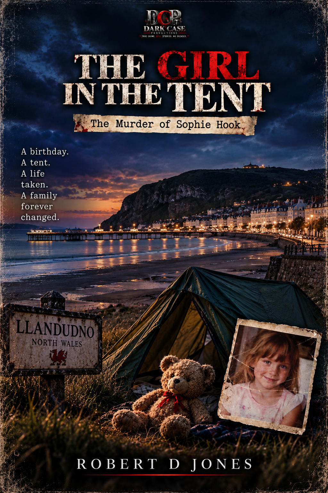
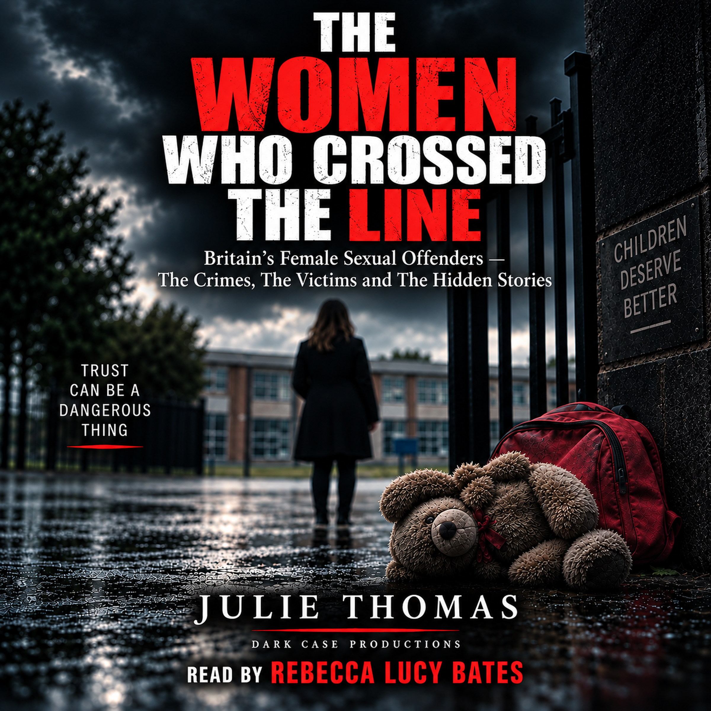
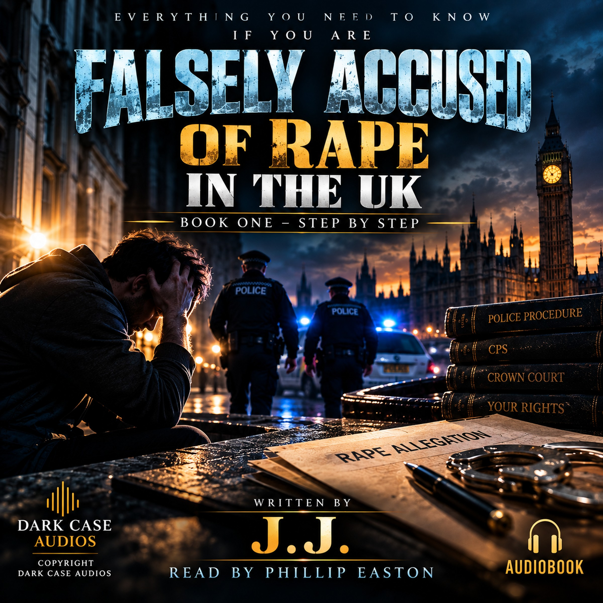
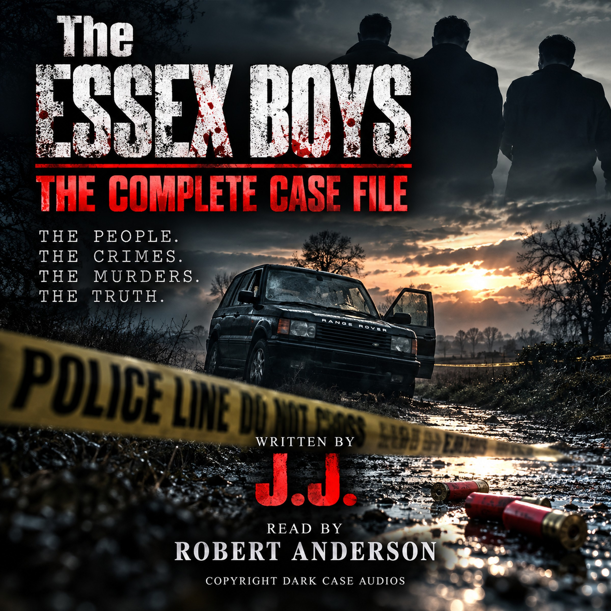
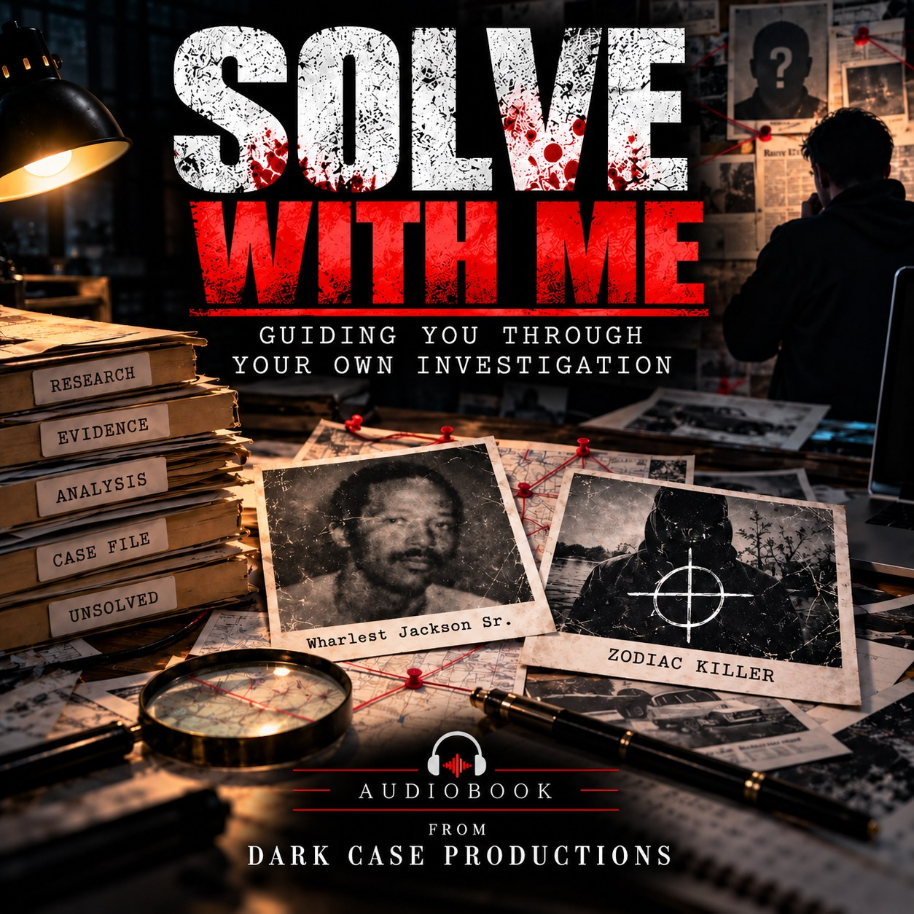

AudiobookUncovering the Ghosts of Gwrych Castle
An audiobook journey into the history, legends, investigations and reported hauntings of Gwrych Castle.
£4.99
Buy audiobook · £4.99
True Crime · Paranormal · Real Stories · No Excuses
Explore Dark Case Audio — a growing collection of true crime, paranormal investigations, real stories, audiobooks, ebooks and free listening.
Listen to the full stories

AudiobookAn audiobook journey into the history, legends, investigations and reported hauntings of Gwrych Castle.
£4.99
Buy audiobook · £4.99
AudiobookBritain’s Female Sexual Offenders — The Crimes, The Victims and The Hidden Stories.
£2.99
Buy audiobook · £2.99
AudiobookEverything You Need to Know If You Are Falsely Accused of Rape in the UK — Book One: Step by Step.
£2.99
Buy audiobook · £2.99
AudiobookThe Complete Case File — The People. The Crimes. The Murders. The Truth.
£1.99
Buy audiobook · £1.99Read the investigations
 Ebook
EbookA Dark Case Productions ebook exploring the case and the questions surrounding it.
£1.99
Buy ebook · £1.99No payment or registration required

A free downloadable crime case file from Dark Case Productions.
Download Free Case FileListen directly on the website
More free audio will be added as new tracks become available. There is no Dark Case Audio download button for these streams.
A dedicated place for discussions about crime, cases, investigations and related subjects.
A separate discussion area for paranormal experiences, investigations, haunted locations and related subjects.
Digital audiobooks are supplied electronically; no physical goods are shipped.
Customer service: darkcaseaudios@gmail.com
Refund requests are considered in accordance with applicable UK consumer law and the circumstances of the purchase.
Where cancellation rights apply, they will be handled in accordance with applicable consumer law and the rules applying to digital content.